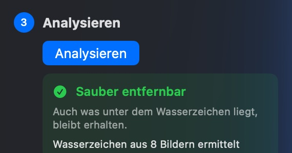
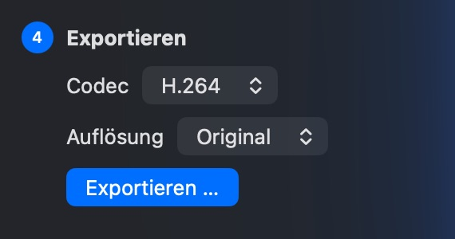
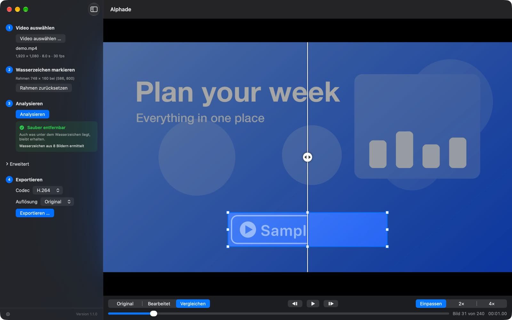

Wasserzeichen markieren
Öffne ein Video und zieh einen Rahmen um das Wasserzeichen.
Alphade entfernt halbtransparente Wasserzeichen aus deinen Videos und stellt das Bild darunter wieder her, direkt auf deinem Mac.
Für Mac herunterladenKostenlos · macOS 26 oder neuer
 Original
Alphade
Original
Alphade
Wiederhergestellt, nicht verwischt
Ein verwischtes Wasserzeichen hinterlässt einen Fleck. Alphade ermittelt, wie das Wasserzeichen in jedes Bild hineingemischt wurde, und rechnet es wieder heraus. So kommt das Bild darunter sauber zurück.


So funktioniert’s

Öffne ein Video und zieh einen Rahmen um das Wasserzeichen.

Alphade untersucht das ganze Video und sagt dir, wie gut es sich wiederherstellen lässt.

Speichere eine saubere Kopie als H.264 oder HEVC, in voller Größe oder kleiner.
Vor dem Export
Vergleiche Original und Ergebnis nebeneinander, geh Bild für Bild durch und zoome bis 4× hinein. Nur der Bereich im Rahmen ändert sich; das übrige Bild und der Ton bleiben genau so, wie sie waren.

Nichts wird hochgeladen, und du brauchst kein Konto. Alphade sammelt keine Daten. Lies die Datenschutzrichtlinie.
Analysieren, Vorschau und Export kosten nichts: kein Kauf, keine Testbeschränkungen, kein Abo. Der Download ist mit einer Developer ID signiert und von Apple notariell beglaubigt.
Funktioniert am besten mit halbtransparenten Wasserzeichen, die an einer Stelle bleiben. Welche Videos geeignet sind.
Für Mac herunterladenOder mit Homebrew: brew install --cask vulcanshen/tap/alphade